Building Collaborative CRUD Applications With ICEfaces and NetBeans
Published: May 2008
CRUD-style applications remain the mainstay of enterprise
application development, but more and more, application developers are
looking to add Rich Internet Application (RIA) capabilities into their
development process. ICEfaces
provides a comprehensive development framework for building RIAs using
pure Java techniques based on JavaServer Faces
(JSF), but beyond RIA features ICEfaces can truly revolutionize
web applications by facilitating real time collaboration using Ajax
Push. The latest ICEfaces 1.7 release includes complete
integration with NetBeans
6.0.1 making it easy to build collaborative RIA-style applications;
Glassfish
combined
with the Asynchronous Request Processing (ARP) features of Grizzly provides the
scalable deployment infrastructure required for push-style web
applications.
Essentially, CRUD-style applications enable users to interact with
enterprise data, including Creating,
Reading, Updating and Deleting data, thus the CRUD
acronym. If we apply RIA techniques to a CRUD application, our
primary motivation is to make interactions between user and data more
effective. This might mean providing sortable table headers,
improving data navigation through hierarchical tree representations,
and
enriching master/detail views onto the data. While making the
user interaction with the application more effective is a worthwhile
exercise onto itself, it does nothing to enhance the interactions
between the users of that data. This is where Ajax Push
techniques come into play, as they enable asynchronous real time data
push to the user when data changes. Now, when those changes occur as
the result of one user manipulating the data, all users interested in
that particular data can be instantaneously informed of the
change. Web-based collaboration is the essence of Web 2.0 and
Ajax Push enables it, fundamentally changing what is possible in
web applications and turning dusty old CRUD applications into rich,
interactive, collaboration platforms.
So what does it take to build collaborative CRUD applications?
In the remainder of this article we will work through a very basic
example using ICEfaces and NetBeans to illustrate how easily attainable
they are. While the example is simplistic, it fully exposes all
the technique you will require to leverage rich ICEfaces features and
Ajax Push all through the NetBeans JSF Visual Design Editor. The
example uses the ICEfaces 1.7, and NetBeans 6.0.1 releases. The
completed NetBeans project can be download from the ICEfaces tutorial
page under the IDE Tutorials
tab.
Installing the ICEfaces Plugins in NetBeans
- Registered ICEfaces community members can download the
ICEfaces/NetBeans integration bundle here.
The bundle is located under IDE Tool
Integrations > NetBeans, and is called ICEfaces-1.7.0-Netbeans-6.0.1-modules.zip.
Unpack the bundle somewhere that you can access it from
NetBeans.
- Install the ICEfaces plugins into NetBeans from Tools > Plugins dialog, using
the Downloaded tab. The Add Plugins button is used
to select the ICEfaces plugins which are called com-icesoft-faces-vwp-ide.nbm and com-icesoft-ide-netbeans-libs-module.nbm.
Once you have selected the plugins, you should see something like this,
and just need to hit the Install
button.
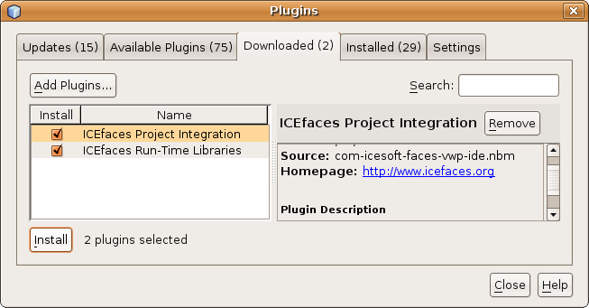
Creating an ICEfaces Project
- Create a new project using File
> New Project wizard, and
select Web > Web Application
for the project type and hit Next
>
button.
- Name the project
CollaborativeCRUD and select GlassFish V2
server, and Java EE 5, then hit the Next
> button.
- Select the Visual Web ICEfaces framework, as illustrated below,
and hit Finished button.
- 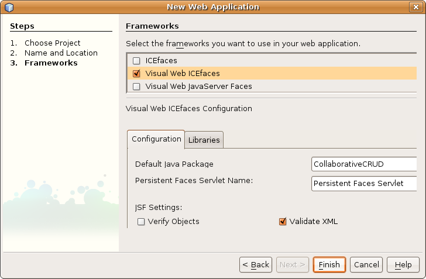
Connecting an ice:DataTable to a Database Table
- In the Visual Design Editor, you see the template for an ICEfaces
page called Page1. Delete the default InputTextarea,
and from the
ICEfaces Palette drag an ice:DataTable
onto the page as illustrated below.
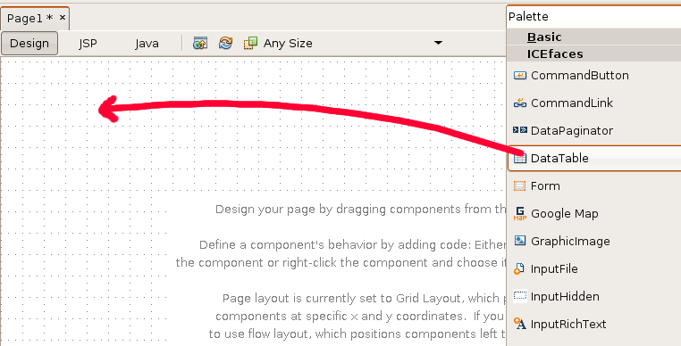
- Next, drag a database table onto the ice:DataTable. This
can be done from the Services
tab under Databases, as
illustrated
below. For this example you will use the Person table, from the Travel database. Make sure the drag
target is the dataTable
and
not the htmlForm. You
will see that the column data in the ice:DataTable
now reflect
the content of the Person
database table.
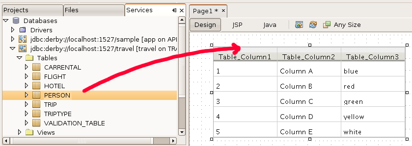
- Add a Sortable Header and a Row Selector using the context menu
for the ice:DataTable as
illustrated below.
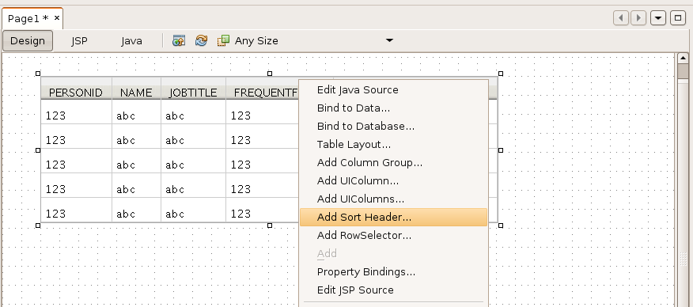
- When the row selector binding dialog appears, simply accept the
defaults and close, as illustrated below. Later you will use the rowSelectior1_processAction
listener to implement the editing logic for
selected rows.
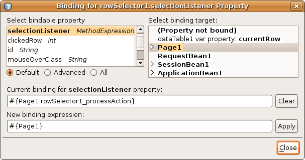
- You can now test that this all works by building the project and
running it. The result, illustrated below, is a sortable table of
the Person database with row
selection, which at this point does
nothing.
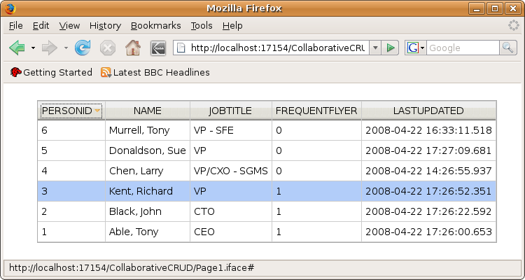
Implement Simple Data Model To Support Editing
- First you need to create a wrapper class for the person
data.
package CollaborativeCRUD;
import java.sql.Timestamp;
import java.util.TreeMap;
public class Person {
private Integer
personId;
private String
name;
private String
jobTitle;
private Integer
frequentFlyer;
private
Timestamp lastDateUpdated;
public Integer
getFrequentFlyer() {
return frequentFlyer;
}
public void
setFrequentFlyer(Integer frequentFlyer) {
this.frequentFlyer = frequentFlyer;
}
public String
getJobTitle() {
return jobTitle;
}
public void
setJobTitle(String jobTitle) {
this.jobTitle = jobTitle;
}
public
Timestamp getLastDateUpdated() {
return lastDateUpdated;
}
public void
setLastDateUpdated(Timestamp lastDateUpdated) {
this.lastDateUpdated = lastDateUpdated;
}
public String
getName() {
return name;
}
public void
setName(String name) {
this.name = name;
}
public Integer
getPersonId() {
return personId;
}
public void
setPersonId(Integer personId) {
this.personId = personId;
}
public Person()
{
}
public
Person(Integer personId, String name, String jobTitle, Integer
frequentFlyer, Timestamp lastDateUpdated) {
this.personId = personId;
this.name = name;
this.jobTitle = jobTitle;
this.frequentFlyer = frequentFlyer;
this.lastDateUpdated = lastDateUpdated;
}
public
Person(TreeMap data) {
this.personId = (Integer) data.get("PERSON.PERSONID");
this.name = (String) data.get("PERSON.NAME");
this.jobTitle = (String) data.get("PERSON.JOBTITLE");
this.frequentFlyer = (Integer) data.get("PERSON.FREQUENTFLYER");
this.lastDateUpdated = (Timestamp) data.get("PERSON.LASTUPDATED");
}
}
- Next you will establish some state in your page bean to support
editing of the selected row. You need to capture the selected
person,
and maintain a boolean indicating whether editing is disabled.
public class Page1 extends AbstractPageBean {
// Managed Component Definitions
...
private Person
blankPerson = new Person(0, "", "", 0, null);
private Person
selectedPerson = blankPerson;
private boolean
editDisabled = true;
public boolean
isEditDisabled() {
return editDisabled;
}
public void
setEditDisabled(boolean editDisabled) {
this.editDisabled = editDisabled;
}
public Person
getSelectedPerson() {
return selectedPerson;
}
public void
setSelectedPerson(Person selectedPerson) {
this.selectedPerson = selectedPerson;
}
- Next you need to implement the row selection logic in the action
listener previously defined for this. You need to extract the row
out of the data model associated with the ice:DataTable, in this case
the dataTableSortableDataModel.
You also need to enable editing
when the row is selected.
public void
rowSelector1_processAction(RowSelectorEvent rse) {
int selectedRowIndex =
rse.getRow();
editDisabled = false;
dataTable1SortableDataModel.setRowIndex(selectedRowIndex);
selectedPerson = new Person((TreeMap)
dataTable1SortableDataModel.getRowData());
}
- Build the project so that the new objects will be available for
binding into the page.
Create Editing Form
- Add a second ice:Form
by dragging one from the ICEfaces component
palette onto the page. Make sure the new form follows the
existing one, and is not nested inside it. You will also have to resize
the form to accept the editing controls that you will add next.
- To keep the example as simple as possible, the editing feature
will display the selected name in an ice:OutputText,
and allow editing
of the job description in an ice:InputText.
Start by dragging an ice:OutputText
onto the
new form. Right click the OutputText
to
display the context menu, and select Bind
To Data. You need to
create the binding #{Page1.selectedPerson.name}
as illustrated below.
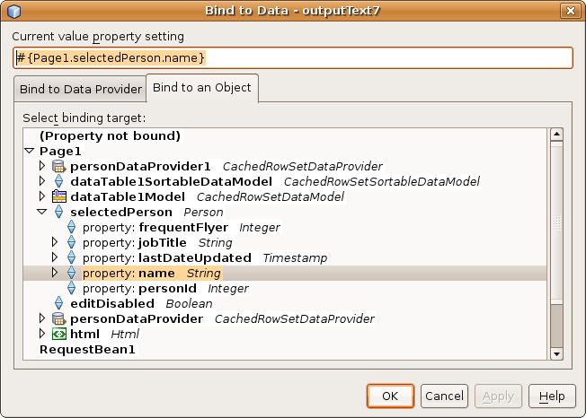
- Now drag an ice:InputText
onto the form, and create the binding #{Page1.selectedPerson.jobTitle}
in the same manner that you did for
the OutputText. Once
you have done that you will add one
additional binding to enable and disable the InputText. Again,
right click the InputText and
from the context menu select Property
Bindings. You need to bind the disabled
property to your editDisabled
boolean in the page bean, as illustrated below.
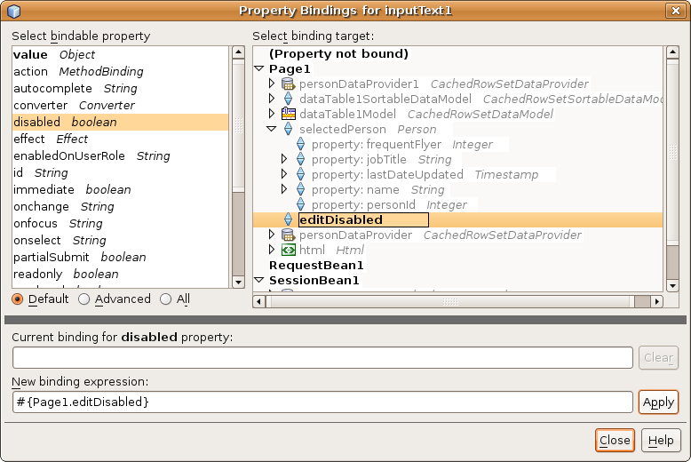
- Finally, drag an ice:CommandButton
onto the form. When you
are done, your page design should look something like illustrated
below. As with the InputText,
you want to bind the CommandButton
disabled property to the editDisabled boolean with a binding
like disabled=#{Page1.editDisabled}.
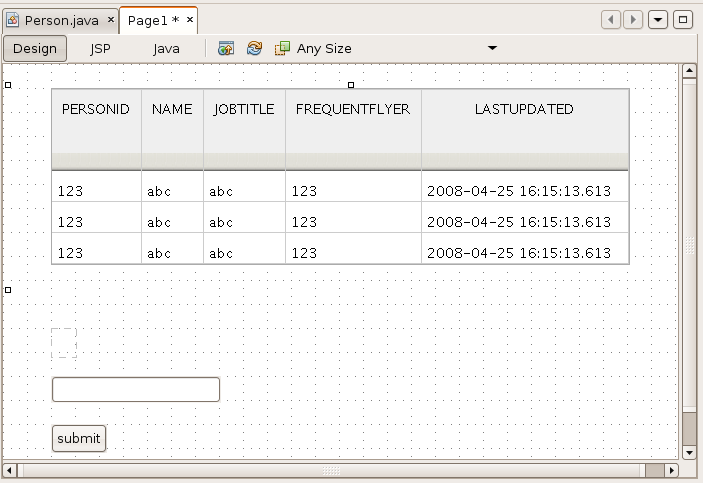
Add The Editing Logic
- Right click the submit
button and from the context menu select Edit Event Handler >
processAction, which will create the Java code
for the button1_processAction()
event listener in the page bean. You need to add logic to this member
function to persist the data, and
disable editing until the next row selection occurs. To do this
you will use the NetBeans data provider that was established
automatically when you associated the Person
table with the ice:DataTable.
The
code for achieving this is shown below.
public void button1_processAction(ActionEvent ae) {
personDataProvider.setCachedRowSet((javax.sql.rowset.CachedRowSet)
getValue("#{SessionBean1.personRowSet}"));
persistPerson(selectedPerson);
selectedPerson = blankPerson;
editDisabled = true;
}
- The logic for persisting a person into the database is
implemented as follows.
private void
persistPerson(Person person) {
if (personDataProvider != null) {
java.util.Date d = new java.util.Date();
Timestamp ts = new Timestamp(d.getTime());
boolean done = false;
try {
if (personDataProvider.getRowCount() > 0) {
personDataProvider.cursorFirst();
do {
if
(personDataProvider.getValue("PERSON.PERSONID").equals(person.getPersonId()))
{
personDataProvider.setValue("PERSON.NAME", person.getName());
personDataProvider.setValue("PERSON.JOBTITLE", person.getJobTitle());
personDataProvider.setValue("PERSON.FREQUENTFLYER",
person.getFrequentFlyer());
personDataProvider.setValue("PERSON.LASTUPDATED", ts);
done = true;
}
} while (!done && personDataProvider.cursorNext());
}
personDataProvider.commitChanges();
} catch (Exception ex) {
System.out.println("Exception occured: " + ex);
ex.printStackTrace();
}
}
}
- One last thing you need to do is ensure that the table view on
the data is refreshed before the render occurs to ensure it is up to
date. This is done in the prerender()
member function as shown
below.
public void prerender() {
try {
CachedRowSet cachedRowSet = (CachedRowSet)
getValue("#{SessionBean1.personRowSet}");
cachedRowSet.execute();
personDataProvider.refresh();
dataTable1SortableDataModel.setWrappedData((javax.sql.rowset.CachedRowSet)
getValue("#{SessionBean1.personRowSet}"));
} catch (Exception ex) {
System.out.println("Exception occured: " + ex);
ex.printStackTrace();
}
}
- You can now build and run the application. When a row is
selected it should look something like this.
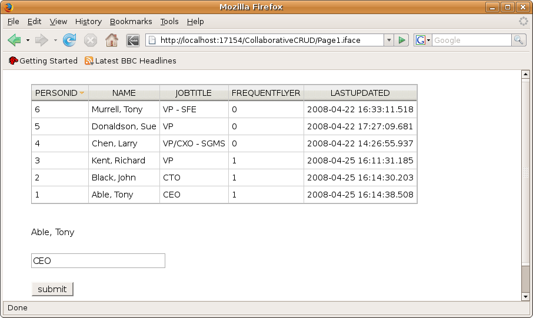
- Now try interacting with the application from 2 different browser
clients. You will see that if changes are made in one client,
they are not reflected in the other client until you interact with that
client, at which time the data is updated to reflect the existing
content in the database. Without Ajax Push implemented in this
applications, the client's view onto the data can be stale at any
moment in time.
Add Ajax Push
- The Ajax Push infrastructure in ICEfaces is organized under an
application scope bean called RenderManager.
To add this bean
to your application open the faces-config.xml
in XML view in the
editor. Right click an existing managed bean definition and from
the context menu select JavaServer
Faces > Add Managed Bean, as
illustrated below.
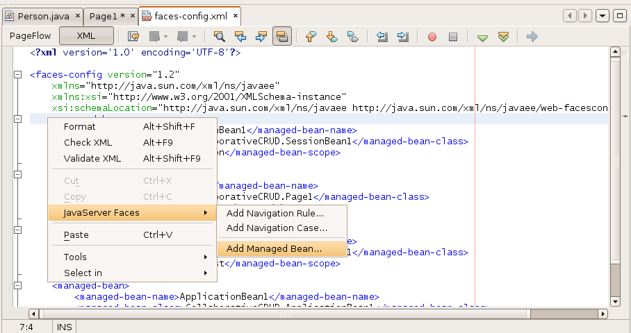
- Define a managed bean called RenderManager
with the class com.icesoft.faces.async.render.RenderManager
in applications scope as
illustrated below.
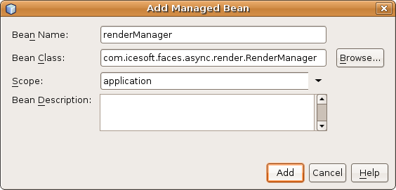
- This will result in the following code being added to your faces-config.xml.
<managed-bean>
<managed-bean-name>RenderManager</managed-bean-name>
<managed-bean-class>com.icesoft.faces.async.render.RenderManager</managed-bean-class>
<managed-bean-scope>application</managed-bean-scope>
</managed-bean>
- You will need access to the RenderManager
from your page bean so
add it as a managed property with the following code.
<managed-bean>
<managed-bean-name>Page1</managed-bean-name>
<managed-bean-class>CollaborativeCRUD.Page1</managed-bean-class>
<managed-bean-scope>request</managed-bean-scope>
<managed-property>
<property-name>renderManager</property-name>
<property-class>com.icesoft.faces.async.render.RenderManager</property-class>
<value>#{renderManager}</value>
</managed-property>
</managed-bean>
- Next you need your page bean to implement the Renderable interface as shown below.
public class Page1 extends AbstractPageBean implements Renderable {
Now if you right click the page, and select Insert Code from the context menu,
you will see a dialog from which you can select Implement Method. You can now
select the Renderable interface and generated the members as shown
below.
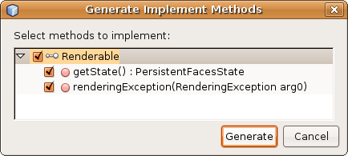
- Before you complete the implementation, you need to add some
state to your page bean as shown below. You will need access to
the PersistentFacesState, RenderManager, and an OnDemandRenderer to hold the list
of Renderables (1 per client
session). The OnDemandRenderer
is a named singleton that will be created by the RenderManager.
private
PersistentFacesState state = null;
private
RenderManager renderManager;
private
OnDemandRenderer personGroup = null;
public void
setRenderManager(RenderManager renderManager){
if(renderManager != null){
this.renderManager = renderManager;
personGroup = renderManager.getOnDemandRenderer("personGroup");
personGroup.add(this);
}
}
public
RenderManager getRenderManager(){
return renderManager;
}
- Make sure the persistentFacesState is initialized in the page
bean init() member.
public void init() {
...
// Perform application
initialization that must complete
// *after* managed
components are initialized
// TODO - add your own
initialization code here
state = PersistentFacesState.getInstance();
}
- Now you can complete the implementation of the Renderable interface with the
following code.
public PersistentFacesState getState() {
return state;
}
public void renderingException(RenderingException
re) {
personGroup.remove(this);
}
- Finally, you need to request a render whenever changes are
committed to the database. This is done in the action listener
for the submit button as
shown below.
public void button1_processAction(ActionEvent ae) {
personDataProvider.setCachedRowSet((javax.sql.rowset.CachedRowSet)
getValue("#{SessionBean1.personRowSet}"));
persistPerson(selectedPerson);
selectedPerson = blankPerson;
editDisabled = true;
personGroup.requestRender();
}
- You can now build and run the application. If you view it
in two different browsers you should see changes pushed to both when
changes are made to the data. You now have a fully functional
collaborative CRUD application. The application will also work
from multiple windows in the same browser instance, but first you will
need to turn on concurrentDOMViews
in the web.xml as shown below.
<context-param>
<param-name>com.icesoft.faces.concurrentDOMViews</param-name>
<param-value>true</param-value>
</context-param>
Configure The Grizzly ARP Engine
- The current deployment of the application relies on a standard
Servlet to handle the Ajax Push connection, which is not a scalable
solution. By configuring Grizzly into the deployment you can make
the application scale well for large numbers of concurrent users.
In future releases of ICEfaces, Grizzly configuration will be
automated, but for now there is a bit of manual configuration that you
must do. First you must add the Grizzly Servlet as the first
Servlet in your web.xml, as
shown below.
<servlet>
<servlet-name>Grizzly Push Servlet</servlet-name>
<servlet-class>
com.icesoft.faces.webapp.http.servlet.GrizzlyPushServlet
</servlet-class>
<load-on-startup> 1 </load-on-startup>
</servlet>
<servlet-mapping>
<servlet-name>Grizzly Push Servlet</servlet-name>
<url-pattern>/block/receive-updated-views/*</url-pattern>
</servlet-mapping>
<servlet>
<servlet-name>Persistent Faces Servlet</servlet-name>
<servlet-class>com.icesoft.faces.webapp.xmlhttp.PersistentFacesServlet</servlet-class>
<load-on-startup>1</load-on-startup>
</servlet>
- Next you have to add the cometSupport
property to the http-listener in your Glassfish domain.xml file. NetBeans can tell
you the location of this file for your installation
from the Services tab under Servers. Right click the
Glassfish server and select properties from the context menu, and you
will see the directory path to your domain.xml
file as illustrated below. Also, you will need to turn off Enable HTTP Monitor to see the true
performance of the application.
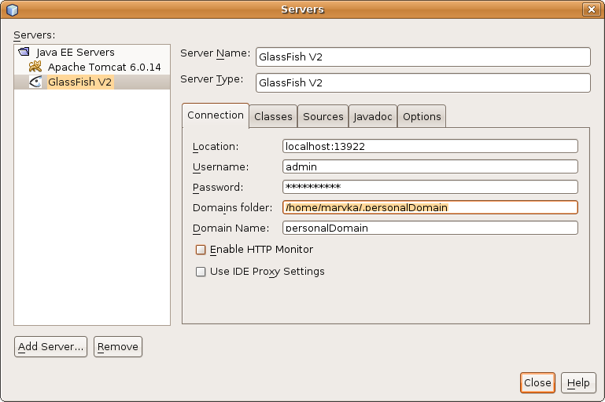
Once you have located the domain.xml
file, you need to add the cometSupport
property as shown below.
<http-listener acceptor-threads="1" address="0.0.0.0"
blocking-enabled="false" default-virtual-server="server" enabled="true"
family="inet"
id="http-listener-1" port="17154" security-enabled="false"
server-name="" xpowered-by="true">
<property
name="proxiedProtocols" value="ws/tcp"/>
<property name="cometSupport" value="true"/>
</http-listener>
- Now rebuild the application, and restart the server. The
application is now running with Grizzly configured to handle all the
Ajax Push connections.
Inspiration Time
You have now completed your first collaborative CRUD application.
While simplistic, the example illustrates all the key concepts required
to build sophisticated collaborative applications with ICEfaces and
NetBeans. Take what you have learned here, and apply your own
inspiration to future application development. You can change the
way your enterprise collaborates, and usher your colleagues and
customers into the Web 2.0 era.
(May
2008)